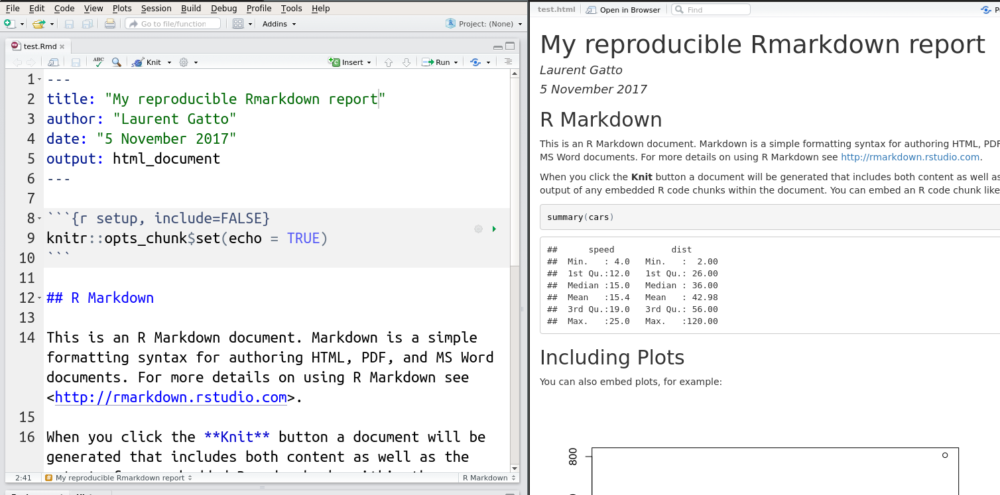
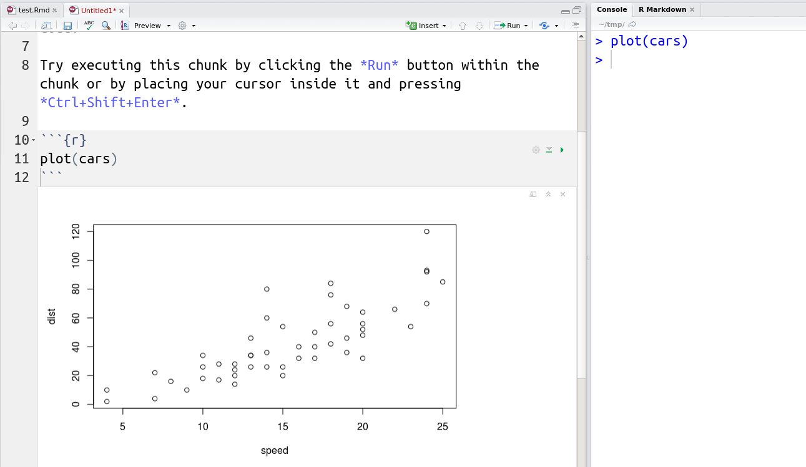

Chapter 7 Reproducible research
Learning Objectives
- Understand the concept of reproducible research and reproducible documents.
- Undertand the process by which a source document in compiled into a final report.
- Generate a reproducible report in html or pdf from an Rmarkdown document using RStudio.
For a general introduction on the topic in French, see Pouzat, Davison, and Hinsen (2015Pouzat, Christophe, Andrew Davison, and Konrad Hinsen. 2015. “La Recherche Reproductible : Une Communication Scientifique Explicite.” Statistique et Société 3 (1). http://www.publications-sfds.fr/index.php/stat_soc/article/view/448.). If you want to explore the topic of reproducible research in French, the Recherche reproductible : principes méthodologiques pour une science transparente MOOC is of interest.
Reproducible research refers to research that can be reproduced under various conditions and by different people. It applies to every area of research, both experimental and computational, but is often (but not always) easier to implement for computational work. The different levels of reproducibility can formalised12 as follows:
Repeat my experiment, i.e. obtain the same tables/graphs/results using the same setup (data, software, …) in the same lab or on the same computer. That’s basically re-running one of my analysis some time after I original developed it.
Reproduce an experiment (not ones own), i.e. obtain the same tables/graphs/results in a different lab or on a different computer, using the same setup (the data would be downloaded from a public repository and the same software, but possibly using a different version, or a different operation system).
Replicate an experiment, i.e. obtain the same (similar enough) tables/graphs/results in a different set up. The data could still be downloaded from the public repository, or possibly re-generated/re-simulated, and the analysis would be re-implemented based on the original description.
Finally, re-use the information/knowledge from one experiment to run a different experiment with the aim to confirm results from scratch.
The table below summerised these concepts focusing on data and code in computational projects.
| Same data | Different data | |
|---|---|---|
| Same code | Repeat | Reproduce |
| Different code | Reproduce | Replicate |
There are many reasons to work reproducibly, and Markowetz (2015Markowetz, Florian. 2015. “Five Selfish Reasons to Work Reproducibly.” Genome Biology 16 (1): 274. https://doi.org/10.1186/s13059-015-0850-7.) nicely summarises 5 good reasons. Importantly, he stressed out that the first beneficiary of reproducible work are the student/research that apply these principles:
- Reproducibility helps to avoid disaster.
- Reproducibility makes it easier to write papers13.
- Reproducibility helps reviewers see it your way14.
- Reproducibility enables continuity of your work.
- Reproducibility helps to build your reputation.
7.1 knitr and rmarkdown
Reproducible research is an essential part of any data analysis. With the tools that are available, one can argue that it has become more difficult not to produce reproducible reports than to producing then.
Reproducible documents have been a part of R since the very
beginning. See for example R. Gentleman and Temple Lang (2004Gentleman, Robert, and Duncan Temple Lang. 2004. “Statistical Analyses and Reproducible Research.” Bioconductor Project Working Papers. Working Paper 2. https://biostats.bepress.com/bioconductor/paper2.), to see how such compendia play a
central role within the Bioconductor
project (more about Bioconductor in it’s dedicated
chapter). Originally, these were written in LaTeX, interleaved with R
code chunks, forming so called Sweave documents (with extension
.Rnw).
 Figure 7.1: The rmarkdown sticker
Figure 7.1: The rmarkdown sticker
More recently, it has become to use the
markdown syntax
markup language, rather than LaTeX. Once interleaved with R code
chunks, these documents become Rmarkdown files (.Rmd). The can be
converted into markdown using knitr::knit, that executes the code
chunk and incorporates their output in the resulting markdown
documents, which itself is converted to one of many output formats,
typically pdf of html using pandoc. In R, this
final conversion is done using rmarkdown::render (that relies on
pandoc).
knitr::knitconverts theRmdintomdby executing the code chunks and replacing the code by its output (text, tables, figures, …).The
mdfile is then compiled into the desired output format (typically html or pdf) usingpandoc.In practice, in R, these two steps are automatically handled in one go by
rmarkdown::render().
Figure 7.2: The rmarkdown workflow (image from RStudio)

The rmarkdown package is developed and maintained by RStudio and benefits from excellent documentation, support and integrates into the RStudio editor.
An Rmarkdown document is composed of
An optional YAML header, delimited by
---.Text in simple markdown format.
One or more R code chunks delimited by three backticks. Each code chunk can be uniquely named and parametrised with a set of code chunk options.
These respective parts of an Rmd file are show below and will be demonstrated during the course.

RStudio also supports Notebook documents15 that execute individual code chunks independently and display directly in the source document.

Here is an R markdown cheat sheet provided by RStudio.
7.2 Additional features
Among the most options that can set for code chunks is
cache. Settingcache = TRUEwill avoid that specific code chunk to be cached and not recomputed every time the documented in knitted, unless the code chunk was modified. This is an important feature when long computations are necessary.The
DT::datatablefunction allows to create dynamic tables directly from R, as show below.
- It is always useful to finish a Rmarkdown report with a section
providing all the session information details with the
sessionInfo()function, such at the end of this material. This allows readers to review the version of R itself and all the packages that were used to produce the report.
Using Rmarkdown, it is also possible to produce slides, websites, and complete books, interactive documents and R package vignettes.
► Question
Prepare an Rmarkdown report summarising the portal ecology data. The report should include a Material and methods section where the data is read in (ideally from the online file) and briefly described, a Data preparation section where rows with missing values are filtered out, and a Visualisation section where one or two plots are rendered. Finish your report with a Session information section.
The R Markdown Cheat Sheet and Reference Guide will help you with the markdown synatax, R code chunk options, and RStudio utlisation.
7.3 Docker containers
There are other tools for reproducible research, that aim to disseminate more than code and data. Docker containers for example enable to share the complete image of an operating system, including all system dependencies and software/data to repeat a complete analysis. These are useful tools, even though their aren’t necessarily ideal, and beyond the aim of this course.
7.4 Additional exercises
► Question
Repeat the Beer consumption analysis using the that was done in chapters 4 and 5.
To test if your report is fully reproducible, uniquely name the Rmd
file as surname_surname_beers_report.Rmd, post it on the course
forum and ask your neighbour to download it, compile it into pdf and
provide feedback on whether the document was reproducible and easy to
follow16.
Page built: 2019-08-22